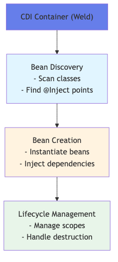
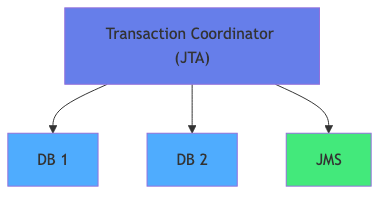
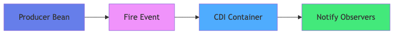

Course Content
All sections — click a title to expand.
💉 What is Dependency Injection?
The problem without DI — the new operator
Without dependency injection, classes create their own dependencies using new, resulting in tight coupling that is hard to test and maintain.
- Tight coupling — the class knows the concrete implementation of each dependency
- No testability — impossible to substitute a fake implementation (mock)
- SRP violation — the class manages both its logic and dependency creation
- Rigidity — changing an implementation requires modifying every consumer class
The CDI solution
CDI (Contexts and Dependency Injection) delegates object creation and management to the Jakarta EE container. Dependencies are injected automatically.
- The container instantiates, configures and injects each bean
- The lifecycle is managed according to the declared scope
- Injection is done by type — type-safe and verified at compile time
Benefits
- ✅ Testability — inject mocks in unit tests
- ✅ Loose coupling — classes depend on interfaces, not implementations
- ✅ Maintainability — change implementation without modifying consumers
- ✅ Reusability — beans shared and reused across the application

🔄 CDI Scopes
The scope determines the lifetime and visibility of a CDI bean. Choosing the right scope is essential for consistency and performance.
@ApplicationScoped
- A single instance shared across the entire application (singleton equivalent)
- Created on first access, destroyed when the application stops
- Ideal for: stateless services, caches, global configuration
@RequestScoped
- A new instance per HTTP request
- Created at the start of the request, destroyed at the end
- Ideal for: form data processing, single operations
@SessionScoped
- One instance per user session (must implement
Serializable) - Shared for the entire duration of the HTTP session
- Ideal for: shopping cart, user preferences, login state
@Dependent
- Instance bound to the lifecycle of the injecting bean (pseudo-scope)
- Default scope if no scope is declared
- Ideal for: value objects, helpers, lightweight beans
Lifecycle callbacks
@PostConstruct— called after injection, before first use@PreDestroy— called before the bean is destroyed, to release resources
💡 Injection with @Inject
Field Injection
The @Inject annotation is placed directly on the field. Simple but discouraged for testability.
Constructor Injection (preferred)
Dependencies are declared as constructor parameters. The recommended approach because:
- Makes dependencies explicit and mandatory
- Facilitates unit testing without a container
- Allows
finalfields (immutability) - Detects dependency cycles at compile time
Method Injection
Injection via a setter method annotated @Inject. Useful for optional dependencies.

🏷️ CDI Qualifiers
When multiple implementations of an interface coexist, CDI does not know which one to inject. Qualifiers resolve this ambiguity.
Custom @Qualifier annotation
- Create an annotation meta-annotated
@Qualifier,@Retention(RUNTIME),@Target({METHOD, FIELD, PARAMETER, TYPE}) - Apply on the implementation and on the injection point
Ambiguity resolution
- CDI resolves injection by type + qualifiers
- Without a qualifier,
@Defaultis implicitly applied - Multiple qualifiers can be combined on the same injection point
@Alternative for switchable implementations
@Alternativemarks an implementation as inactive by default- Activated in
beans.xmlor globally via@Priority - Ideal for test, stub, or environment-specific implementations
🏭 Producer Methods
Producer Methods allow creation of CDI beans whose instantiation requires special logic — for example an EntityManager or an object configured from an external file.
@Produces
- Method annotated
@Produces— the return type becomes an injectable CDI bean - Can carry a scope (
@ApplicationScoped,@RequestScoped…) - Can accept parameters injected by CDI
Producers with configuration
- Allows initialising third-party resources (DataSource, Logger, external configuration)
- The construction logic is centralised in a single method
Producers with qualifiers
- A producer can carry a qualifier to distinguish multiple instances of the same type
@Disposer for cleanup
- Method annotated
@Disposescalled automatically when the produced bean is destroyed - Allows cleanly closing connections, streams or resources
🔍 Interceptors
CDI interceptors allow adding cross-cutting behaviour without modifying the business code.
@InterceptorBinding
- Custom annotation meta-annotated
@InterceptorBinding,@Retention(RUNTIME),@Target({METHOD, TYPE}) - Applied on the method or class to intercept
@Interceptor implementation
- Class annotated
@Interceptor+ the binding annotation - Activated in
beans.xmlor via@Priority
@AroundInvoke
- Interception method called around the invocation
- Receives an
InvocationContext— can read/modify parameters and the result - Must call
context.proceed()to continue the invocation
Use cases
- ✅ Logging — log method entry/exit
- ✅ Performance — measure execution time
- ✅ Security — verify authorisations before execution
- ✅ Cache — short-circuit the call if the result is cached
💳 @Transactional Transactions
@Transactional (CDI / Jakarta Transactions) enables declarative transaction management without explicit management code.
Propagation types
- REQUIRED (default) — uses the existing transaction or creates a new one
- REQUIRES_NEW — suspends the current transaction and creates a new independent transaction
- MANDATORY — requires an active transaction to exist (exception otherwise)
- SUPPORTS — uses the current transaction if it exists, otherwise executes without one
- NOT_SUPPORTED — suspends any active transaction, always executes without a transaction
- NEVER — throws an exception if a transaction is active
Rollback strategies
- Automatic rollback on
RuntimeExceptionandError rollbackOn— specify additional exceptions that trigger rollbackdontRollbackOn— exceptions not to consider for rollback- Programmatic rollback:
context.setRollbackOnly()

📡 CDI Events
The CDI event system implements the Observer pattern in a type-safe way with no direct coupling between producer and consumer.
@Observes — synchronous observer
- Observer method annotated
@Observeson the event parameter - Called synchronously by CDI when the event is fired — all observers execute in the same thread before
fire()returns - Can be ordered using
@Priority
@ObservesAsync — asynchronous observer (CDI 2.0+ / Jakarta CDI 4.0)
- Observer method annotated
@ObservesAsyncon the event parameter - Executed in a separate thread, non-blocking — triggered via
event.fireAsync()which returns aCompletionStage - Use for notifications, audit logs, and any side-effect that must not block the main transaction
@Inject Event<T>
- Inject
Event<MyEvent>to fire an event event.fire(payload)— synchronous, calls@Observesobserversevent.fireAsync(payload)— asynchronous, calls@ObservesAsyncobservers, returns aCompletionStage
Event qualifiers
- Qualifiers filter observers — an observer only receives events matching its qualifiers
event.select(new AnnotationLiteral<MyQualifier>(){}).fire(payload)